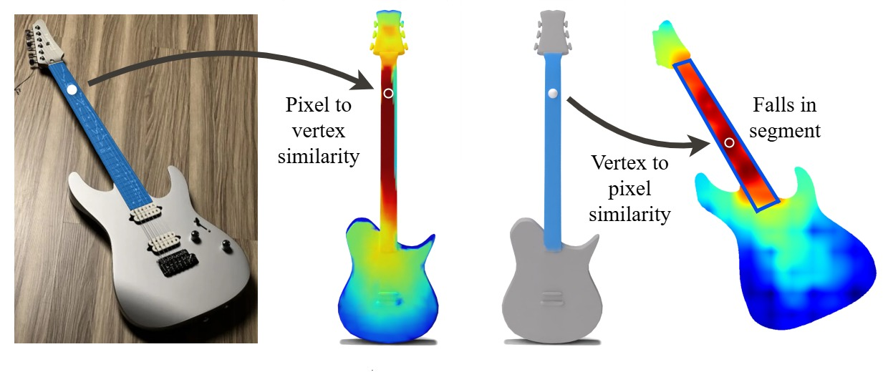
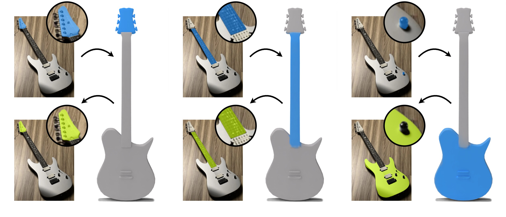
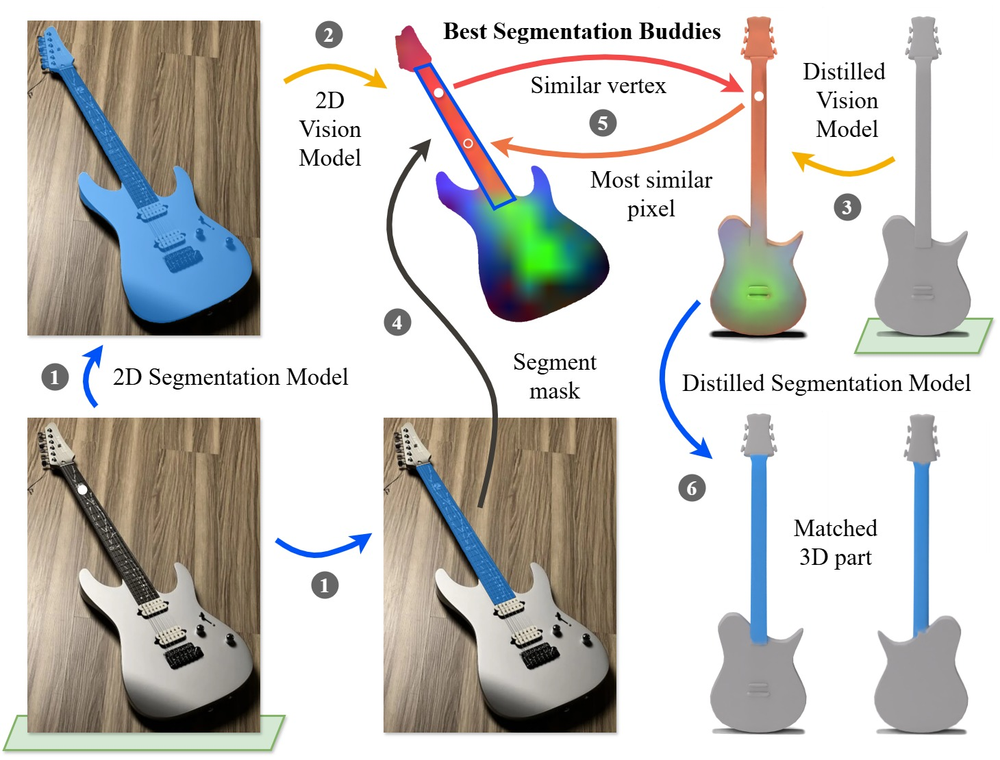
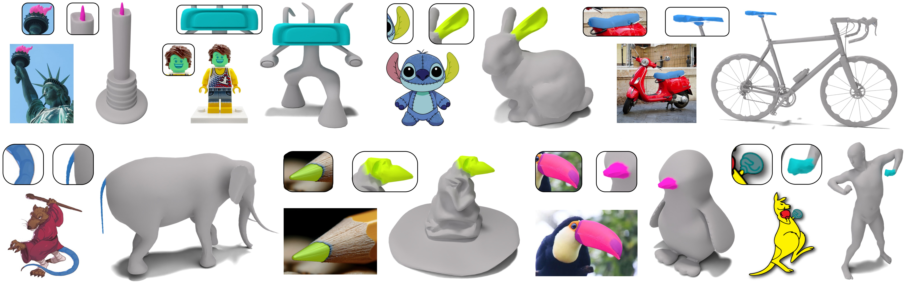
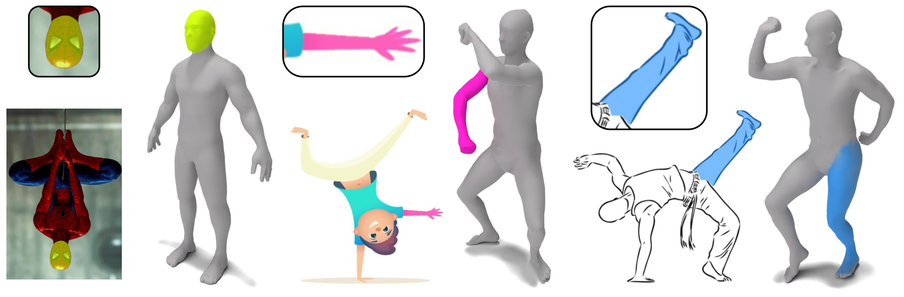
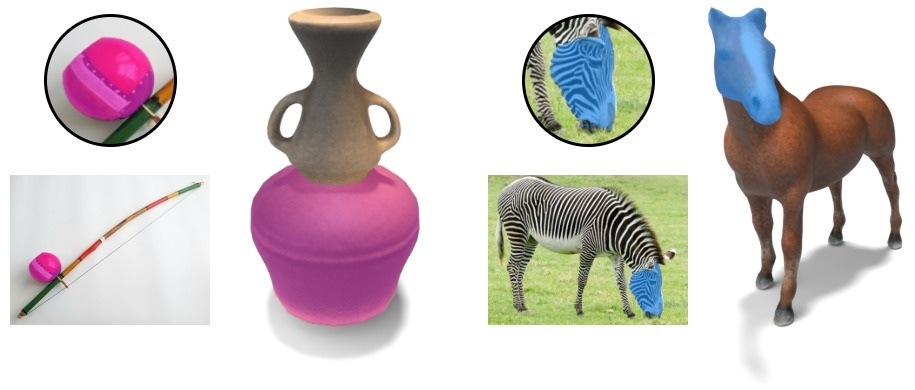
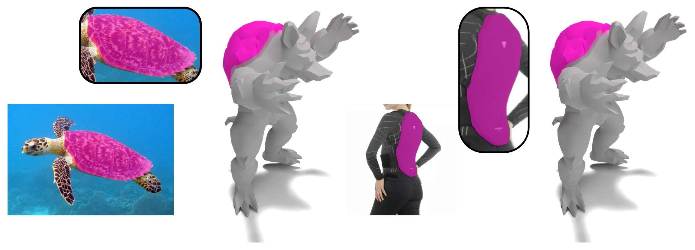
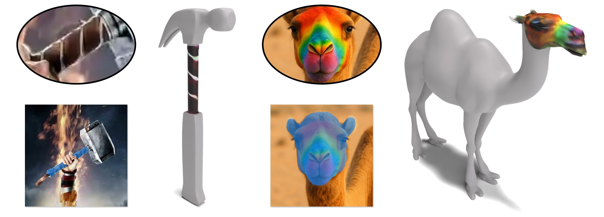
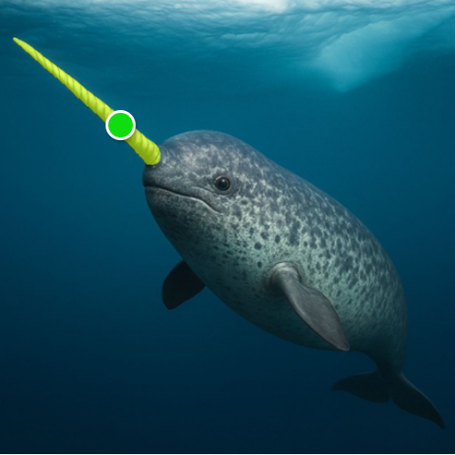
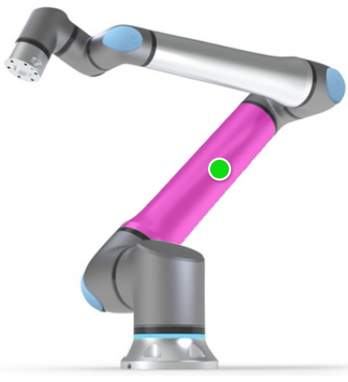

Best SegmentationBuddies forImage-Shape Correspondence
University of Chicago
*Equal contribution
Finding correspondences is a fundamental and extensively researched problem in computer vision and graphics.
In this work, we examine the underexplored task of estimating segmentation-to-segmentation correspondence
between images in the wild and untextured 3D shapes. This task is highly challenging due to substantial
differences in appearance, geometry, and viewpoint. Our approach bridges the cross-modality gap by linking
pixels in the image segment to vertices in the corresponding semantic part of the 3D shape.
To achieve this, we first distill deep visual features from a 2D vision model onto the 3D shape surface,
allowing for the computation of feature similarity between image pixels and shape vertices. Then, we
identify Best Segmentation Buddies, vertices whose most similar image pixel lies within the
image segmentation region, enabling the reliable discovery of vertices in semantically corresponding
shape parts. Finally, we leverage distilled 3D features from the 2D image segmentation model to segment
the shape directly in 3D, bootstrapping the correspondence process. We demonstrate the generality and
robustness of our approach across a wide range of image-shape pairs, showcasing accurate and semantically
meaningful correspondences.


Best Segmentation Buddies. Due to the modality difference, pixels and vertices
are not mutual nearest neighbors (a.k.a, best buddies). Thus, for the clicked pixel, we search the best
segmentation buddy - a vertex whose nearest neighbor pixel falls within the segmentation region of the
original pixel click and yields a segmentation mask with the highest overlap with the click's mask.
Matching properties. When a correspondence between an image region and a mesh part exists
(the guitar's head and neck), the matched vertex will map back to a segment (bottom row) that is
almost identical to the original segmentation (top row). However, if a match does not exist, such
regions will differ substantially (the guitar's volume knob and body), implying the absence of
correspondence. We discover this property and exploit it to enable successful image-shape matching
via our Best Segmentation Buddies mechanism.

Method overview. Our method finds segmentation-to-segmentation correspondence between an input image (bottom left) and a 3D mesh (top right). We connect pixels to mesh vertices by leveraging pretrained 2D foundation models for segmentation 1 and feature similarity 2. We distill the pretrained vision features to the mesh surface 3 to perform the cross-modality matching 4, 5, and leverage a distilled segmentation model 6 to obtain the corresponding part in 3D.

Correspondence for various image and shape pairs. Best Segmentation Buddies can match semantic parts when the object in the image and the 3D mesh are from different domains, where the corresponding elements differ substantially in appearance, shape, and size.


Best Segmentation Buddies finds correspondences between the image and the shape when the object's pose
in each modality differs substantially.
Our method can also work with textured shapes. It successfully matches image and shape regions despite
variations in their appearance and texture.


Cross-domain image-to-image correspondence. By matching regions from different images to the same shape
part via Best Segmentation Buddies, we indirectly obtain correspondence between different domain images (the
sea turtle shell and the ski back protector).
Local texturing. Our image-to-shape matching enables automatic, localized texturing of the shape driven by
the texture in the image.
🖱️ To interact with the 3D models, Scroll to zoom, hold the Left Click + drag to rotate, and hold the Right Click + drag to translate.


Input Image
Neural Best Buddies
Diffusion Image Features
Best Segmentation Buddies (ours)
We adapt baselines to solve our task from existing image-based matching techniques (Neural Best Buddies and Diffusion Image Features). These methods produce incorrect correspondences, whereas Best Segmentation Buddies reliably selects the shape part that semantically matches the image segment.
@InProceedings{lang2026bsb,
author = {Lang, Itai and Lyu, Dongwei and Decatur, Dale and Hanocka, Rana},
title = {{Best Segmentation Buddies for Image-Shape Correspondence}},
booktitle = {Proceedings of the IEEE/CVF Conference on Computer Vision and Pattern Recognition (CVPR)},
month = {June},
year = {2026}
}